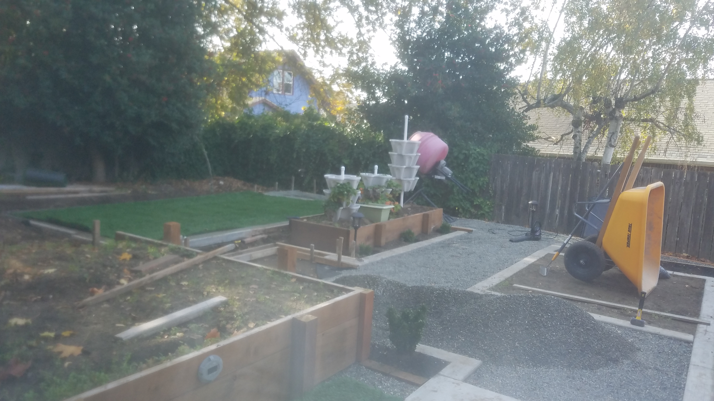
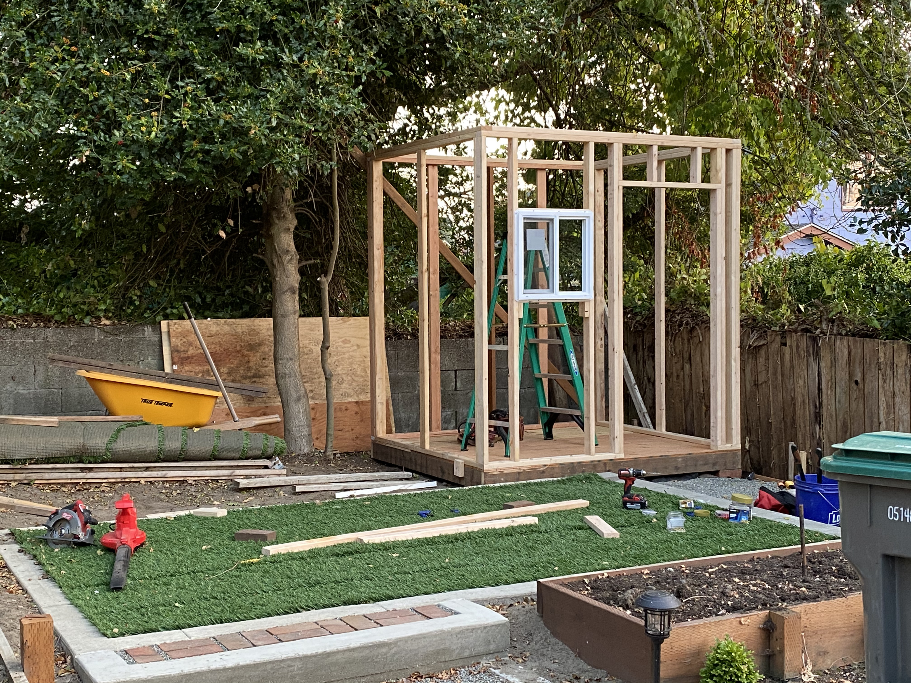
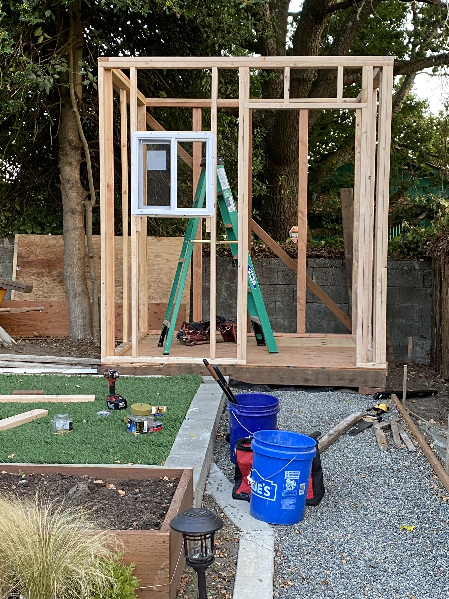
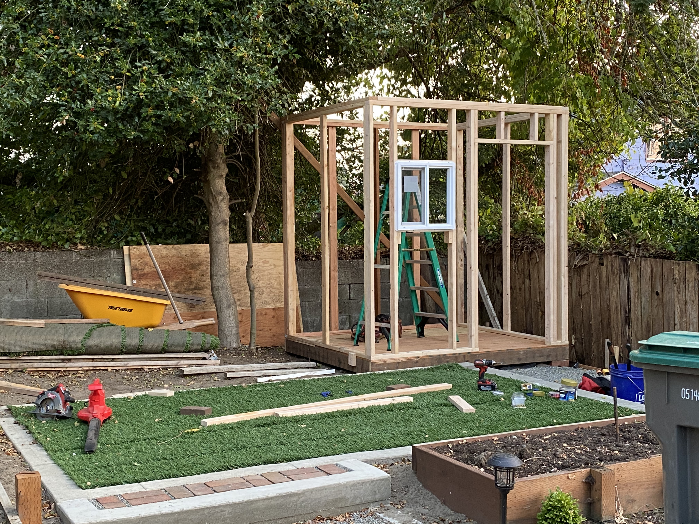
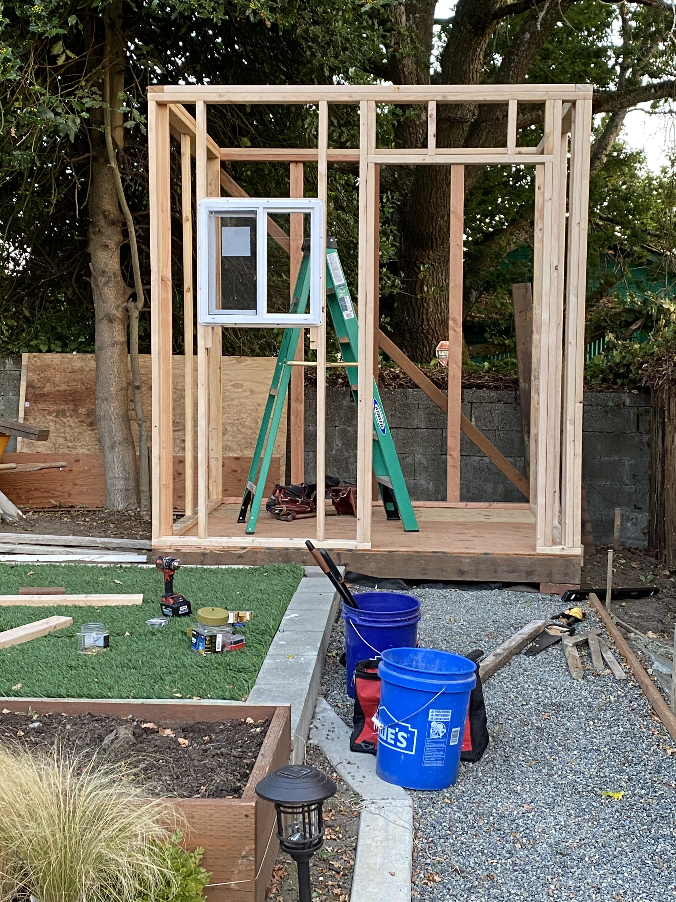

This is the End: The Project is Never Complete, still more to do.
While the main elements are now in place, the space will continue to evolve and change over time. Recently, I added the small storage shed to keep everything organized and a play structure for my two daughters so they have their own space to enjoy. These additions are exactly what the yard needed to feel complete, for now.

 




Looking at the photos of the completed yard, I'm excited by how everything has come together. But the truth is, landscaping is a constantly changing process. The plants will grow, the space will settle, and I'm sure there'll be new ideas or projects to add down the road. It's been such a rewarding journey to shape this space, and I look forward to seeing how it will continue to grow and change over time. For now, though, I'm happy with how it's turned out. The gazebo is perfect for relaxing, the play structure is already a hit with the kids, and there's always something to enjoy in the yard. But even though the project is “done” for now, I know there's always room for improvement and new things to try. In the end, this is just the beginning of what's sure to be an ever-evolving space.